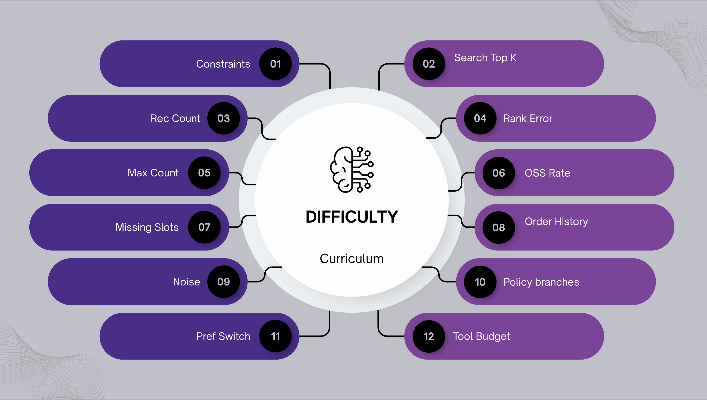
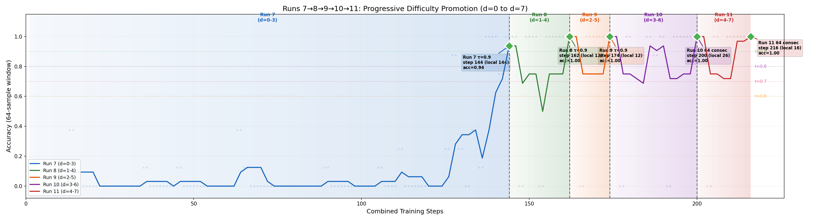

Ecom-RLVE: Adaptive Verifiable Environments for E-Commerce Conversational Agents
Apr 16, 2026
TL;DR — We extend the RLVE framework from single-turn reasoning puzzles to multi-turn, tool-augmented e-commerce conversations. EcomRLVE-GYM provides 8 verifiable environments — product discovery, substitution, cart building, returns, order tracking, policy QA, bundle planning, and multi-intent journeys — each with procedural problem generation, a 12-axis difficulty curriculum, and algorithmically verifiable rewards. We train a Qwen 3 8B model with DAPO over 300 steps and present early results demonstrating that environment scaling and adaptive difficulty transfer to agentic, real-world task completion.
This project originated in the PyTorch OpenEnv Hackathon and is still evolving, follow us for updates 🔥
Why RL for shopping agents?
Large language models can hold fluent conversations, yet deploying them as shopping assistants reveals a persistent gap: fluency ≠ task completion. A customer who asks “find me a USB-C charger under $25 that ships in two days” needs an agent that invokes the right catalog search, filters on three hard constraints, avoids hallucinating product IDs it never retrieved, and handles follow-ups when the top result goes out of stock.
Supervised fine-tuning can teach surface-level tool use from demonstrations, but it cannot scale to the combinatorial space of constraint configurations, partial-information dialogues, and multi-step transactional workflows that real e-commerce demands.
Reinforcement learning with verifiable rewards (RLVR) offers an alternative: the agent optimises for outcomes — did the products satisfy the constraints? Was the cart correct? Was the return initiated for the right order line? The challenge is constructing reward functions that are both verifiable (no LLM-as-a-judge subjectivity) and adaptive (difficulty that grows with the policy’s capability).
From RLVE-Gym to EcomRLVE-GYM
RLVE-Gym provides 400 environments for sorting, multiplication, Sudoku, and other algorithmic-reasoning tasks; however, those are all single-turn, text-in / text-out puzzles — extending to agentic domains was left as future work.
EcomRLVE-GYM fills that gap: we stay in the verifiable regime (e-commerce outcomes can be checked algorithmically) while extending to multi-turn, tool-augmented, agentic conversations — environments where the agent must act (call tools, modify world state) rather than merely reason (produce a text answer) and compensates for the deficiency of the search system.
EcomRLVE-GYM transforms customer-service outcomes structurally verifiable:
![Table of tasks and their verifiable signals. Product recommendation: does the product satisfy all stated constraints, and is it in stock? Substitution: is the substitute similar to the original, and does it meet compatibility requirements? Cart building: does the final cart exactly match the requested items, variants, and quantities? Return initiation: was a return initiated, for the correct order and line item? Order tracking: did the agent identify the correct order and report the accurate status? Policy Q&A: does the answer match the deterministic output of the policy rule engine? Bundle planning: does the shopping list cover all required categories within budget? Multi-intent journey: did each sub-task succeed?](img/verifiable-signals.png)
Every signal above can be evaluated by a program with access to the hidden ground-truth goal. No human annotation or LLM-as-a-judge is needed.
What a training episode looks like
Before we explain the framework, here is what a single EcomRLVE episode looks like at difficulty
d = 4. The environment generates a hidden goal, a simulated user opens the chat, and the
agent must use tools to satisfy the request. Every action is verified algorithmically — no LLM judge
required.
![Sample episode, E_CART at d = 4. Turn 1, user: “I need two 65-watt Anker chargers (USB-C) and a Spigen MagSafe case in matte black.” Turn 2, agent: “Let me find those for you”, calling catalog.search for “Anker 65W charger” and for “Spigen MagSafe case”. Turn 3, agent: “Checking available variants”, calling catalog.get_variants for prod_8832 and prod_2291. Turn 4, agent: “Items added to your cart!”, calling cart.add for prod_8832 with variant USB-C and quantity 2, and for prod_2291 with variant Matte Black and quantity 1. Verifier: F1 = 1.0, r_task = +1.0; T_eff = 3, r_eff = +0.5; hall_rate = 0, r_hall = 0.0; r_total = 0.75 × 1.0 + 0.15 × 0.5 + 0.10 × 0.0 = 0.825.](img/sample-episode-cart-d4.png)
d = 4, with the
verifier’s reward breakdown.The reward is fully computed by code: F1 over (product, variant, qty) tuples, an
efficiency bonus for finishing in fewer turns, and a hallucination check that every recommended
product ID was actually retrieved. If the agent had picked the Lightning variant instead of USB-C,
the simulated user would have corrected it mid-dialogue — and the F1 would have dropped.
The eight environments
Each environment covers a distinct real-world shopping scenario. The agent must complete the task using tools (catalog search, cart operations, order lookups, policy queries) and is scored by a program — not a human or another LLM.
Table 1. The eight environments.
| Environment | What the agent must do |
|---|---|
| Product Discovery | Find products that satisfy all the user’s constraints |
| Substitution | An item is out of stock — find a similar, compatible alternative |
| Cart Building | Add the exact products, variants, and quantities the user asked for |
| Return + Replacement | Identify the right order line, initiate a return, suggest a replacement |
| Order Tracking | Resolve which order the user means and report its current status |
| Policy QA | Answer a deterministic question about store policy (return window, shipping rules, etc.) |
| Bundle Planning | Recommend a complete shopping list for a project within a budget |
| Multi-Intent Journey | Handle a conversation that chains 2–5 of the above tasks in sequence |
Every environment uses the same three-part reward signal:
- Task reward — did the agent actually complete the goal? (e.g., were the right products recommended, was the cart correct, was the right order tracked?)
- Efficiency reward — did the agent complete it without wasting turns? Turns the user caused (asking a follow-up, confirming an action) don’t count against the agent — only turns caused by agent mistakes do.
- Hallucination penalty — did the agent only recommend products it actually retrieved during the session? Recommending product IDs that were never looked up is penalised, so the agent cannot invent results from memory.
Invalid outputs (malformed JSON, illegal tool calls) trigger an immediate failure score, creating a strong incentive for well-formed responses from step one.
Adaptive difficulty curriculum
A single difficulty number d controls 12 independent aspects of a task
simultaneously. This is important because e-commerce conversations are hard in many different ways at
once — not just along one dimension.

Here are four representative difficulty axes:
Table 2. Four representative difficulty axes at easy, medium and hard settings of d.
| What changes | Easy (d = 0) | Medium (d = 6) | Hard (d = 12) |
|---|---|---|---|
| How many constraints the user has | 2 | 5 | 8 |
| How often the user omits a constraint | 5% | 70% | ~80% |
| Fraction of search results that are distractors | 0% | 12% | 24% |
| Items that go out of stock mid-conversation | 0% | 30% | 50% |
The other eight axes cover turn budget, input noise (typos, slang), context switches, retrieval depth, order-history size, policy complexity, and tool budget. The full breakdown is in the technical report.
Adaptive scheduling. Each environment tracks the agent’s success rate independently and only advances to harder problems once the agent is passing the current level reliably. This keeps every environment training at the agent’s capability frontier — avoiding both “too easy to learn from” and “too hard to make progress on”.
d with a hidden goal; a simulated user and the agent talk while the agent calls tools; a program checks the outcome against the goal and returns the task reward, the efficiency reward and the hallucination penalty. Each environment tracks the agent’s success rate and moves to harder problems only once the current level is passed reliably.Deep dive: Cart Building (E_CART)
Cart building is a good showcase because it requires the full search → inspect → clarify → act loop, has a binary ground truth, and introduces a challenge absent from most recommendation benchmarks: variant selection.
To succeed, the agent must develop five distinct skills:
Table 3. The five skills cart building requires.
| Skill | What it means in practice |
|---|---|
| Product Discovery | Search the catalog with well-formed queries to find the right items |
| Variant Selection | Identify the correct color, size, or connector type — not just the right product |
| Cart Management | Add items with the exact variant and quantity the user asked for |
| Clarification Dialogue | Ask the user a focused follow-up when a request is ambiguous (e.g., missing size) |
| Multi-Item Orders | Handle shopping lists with several different products in a single conversation |
The agent uses six tools to accomplish this:
Table 4. The six tools available in E_CART.
| Tool | What it does |
|---|---|
catalog_search | Searches the product catalog with a natural-language query |
catalog_get_variants | Returns available variants (color, size, connector, etc.) for a product |
cart_add | Adds a product to the cart with a specific variant and quantity |
cart_view | Reads the current cart so the agent can verify it matches the request |
user_get_visit_history | Fetches recently viewed products by user |
ask_user | Sends a clarification question to the customer when a detail is missing |
The problem
The generator samples 1–5 target products (scaling in difficulty with d), each
potentially requiring a specific variant (USB-C vs Lightning, Matte vs Glossy) and a quantity > 1.
The agent must:
- Search the catalog to find each product
- Call
catalog.get_variantsto see available options - Add the correct
(product_id, variant_id, qty)tuples to the cart
Why variants matter
Real product catalogs have sparse variant data — many products have none, and those that do typically vary only by colour or size. To create a richer discrimination task, we synthesize variants at episode initialization:
- A per-category priority list picks the most natural attribute to vary (electronics →
connector_type; clothing →size; kitchen →material). - For each target product, we generate 3 variants: 1 target + 2 plausible distractors. An “Anker
65W USB-C Charger” produces
{USB-C, Lightning, HDMI}. - The verifier checks composite keys
(product_id, variant_id)— correct product but wrong variant means the unit is unmatched.
Difficulty scaling
Table 5. How the cart-building task scales with d.
| Axis | d = 0 | d = 3 | d = 6 | d = 9 |
|---|---|---|---|---|
| Distinct items | 1 | 2 | 3 | 4 |
| Variant required | 21% | 66% | 93% | 99% |
| Multi-quantity | 0% | 30% | 50% | 50% |
At d = 0 the agent adds a single product with no variant complexity — learning the
basic catalog.search → cart.add workflow. At d = 6 it juggles 3 items,
nearly all requiring a specific variant, with half needing qty > 1.
Scoring
The cart must be exactly right — correct product, correct variant, correct quantity. Partial credit is given for partially correct carts, but a perfect score requires every item to match. If the agent adds the wrong variant, the simulated user corrects it mid-dialogue (“that’s the Lightning version, but I need USB-C”), giving the agent a chance to self-correct before the episode ends.
Trajectories: easy vs. hard
Two real E_CART episodes from a Qwen 3 8B agent. Same environment, same agent — difficulty alone changes the game.
look-upcart changetalk onlydoneitem correctitem wrongreward, d = 1reward, d = 8
d = 1 the item is right at turn 2 and the episode ends at turn 3. At d = 8 the air fryer and the tank top are wrong from turn 4 to the end at turn 8. Right: the reward the verifier returned for each episode.Table 6. Two E_CART episodes turn by turn, at d = 1 and d = 8.
| Step | d = 1 — 1 item, no variants | d = 8 — 3 items, variants + typos |
|---|---|---|
| User message | “Shopping list: SonicWave Keypad. Please add everything.” | “pls add the following to my aart: Eco-Frienly HrenLefa Charger by GreenLeaf, High-Performance AqaPure Air Fryer , Lighrweiht PixelVault Tank Top (3).” — typos from noise axis |
| Turn 1 | user.get_visit_history() → 4 results. Spots the target immediately. |
user.get_visit_history() → 9 results. Must disambiguate across chargers, fryers, tops. |
| Turn 2 | cart.add("syn_000162", qty=1) → Cart: 1 item, $2.74. “I found the SonicWave Keypad.” User: “Great, that’s the exact one.” |
No tool calls — presents 3 product cards. User: “Add the Charger with 100W output, Air Fryer with Charcoal filter, 3 Tank Tops in size XS.” |
| Turn 3 | answer: { "done": true } — Done in 3 turns. |
catalog.get_variants × 3 → charger: 6 variants (100W, 120W, 30W…), air fryer: 6 (Bamboo, Permanent, Charcoal…), tank top: 7 (XS, S, XL…). User: “I need three Tank Tops in XS.” |
| Turn 4 | cart.add(charger, "100W", qty=1) ✓ cart.add(fryer, "Bamboo", qty=1) ✗ should be Charcoal. cart.add(tank_top, "size_XL", qty=3) ✗ should be XS. User: “Air Fryer has Bamboo not Charcoal, Tank Top is XL not XS.” | |
| Turn 5 | Re-fetches tank top variants, adds 2× XS — doesn’t fix the air fryer. User: “Air Fryer still shows Bamboo. I need three XS, not two.” | |
| Turn 6 | Re-fetches tank top variants again — still ignores the air fryer. User: “Please change the Air Fryer variant.” | |
| Turn 7 | “I cannot find a Charcoal filter variant.” — It exists; the agent saw it in turn 3 but never selected it. User: “Skip the Air Fryer then.” | |
| Turn 8 | answer: { "done": true } — Cart still wrong: Charger ✓, Air Fryer (Bamboo) ✗, Tank Top (3×XL + 2×XS) ✗ | |
| Reward | r_task = +1.00, r_eff = +0.33, r_hall = 0.00, r_total = +0.80 ✓ |
r_task ≈ 0.00, r_eff = −0.43, r_hall = 0.00, r_total = −0.06 ✗ |
| Outcome | Cart matches goal. 3 turns, 2 effective. | Wrong variants, wrong quantities, user gave up. 8 turns, 6 effective. |
At d=1 the agent solves the task in 3 clean turns. At d=8 it spirals — picking Bamboo instead of Charcoal, XL instead of XS, never fixing the air fryer despite two user corrections, then hallucinating that the variant doesn’t exist. This is exactly the kind of multi-step error cascade that the difficulty curriculum surfaces, and that adaptive training should teach the agent to recover from.
User simulation
A verifiable environment needs a user simulator that behaves realistically. We use Qwen3.5 (9.7B) to generate natural, varied user messages rather than canned templates — covering everything from typo-filled requests to mid-conversation topic switches.
Two design choices matter for training quality:
Preferences match stated constraints. Each simulated user has a hidden set of preferences (price sensitivity, brand loyalty, shipping speed, etc.). These are deliberately biased toward whatever constraints the user communicated — so if the user said “under $25”, the reward function actually cares about price. Without this, an agent could be penalised for correctly following the user’s instructions.
Strategic omission. The LLM deliberately withholds some constraints from the opening message to force the agent to ask clarifying questions. The system tracks exactly what was and wasn’t mentioned, so the agent is never penalised for information it was never given.
Environment scaling
Following RLVE’s methodology, we define nested environment collections:
C1 ⊂ C2 ⊂ C4 ⊂ C8
Table 7. The nested environment collections.
| Collection | Environments | Skills trained |
|---|---|---|
| C1 | Cart | Search Query Formulation, Cart Manipulation |
| C2 | + Substitution | Similarity reasoning under constraints |
| C4 | + Product Discovery, Returns | Transactional workflows (Retrieval + recommendation, return initiation) |
| C8 | + Status, Policy, Bundle, Journey | Knowledge retrieval, planning, compositionality |
We hypothesise — consistent with RLVE’s findings — that C8 agents outperform single-environment specialists, even on the specialist’s own task.
Early results
We trained Qwen 3 8B with DAPO on C1 (Cart Building) for 300 steps as an initial viability study.
Table 8. Training configuration.
| Setting | Config |
|---|---|
| Base model | Qwen 3 8B |
| Algorithm | DAPO (G = 8 rollouts/prompt) |
| LR | 1e-5 |
| Catalog | 2M products, FAISS index with Alibaba-NLP/gte-modernbert-base (768-dim) |
| User sim | Qwen3.5 9.7B |

d = 0–3 and was promoted at step 144 (accuracy 0.94); runs 8 to 11 were promoted at steps 162, 174, 200 and 216 (accuracy 1.00 each), the last on d = 4–7.We saw progressive growth in difficulty reached, confirming that adaptive scheduling produces a steady learning signal rather than the saturation (static-low) or starvation (static-high) patterns predicted by the RLVE paper.
Try it yourself
Run a live episode directly in your browser using the demo linked below. Here is how to get started:
- Pick an environment from the dropdown (e.g.,
E_CARTfor cart building orE_PDfor product discovery). - Set a difficulty —
0is a simple single-constraint task;6+introduces missing information, noisy retrieval, and variant selection. - Click “Reset Episode” — the simulated user will open with a shopping request.
- You are the agent now: make tool calls, analyse outputs and submit the final list of product ids.
- Click “Reset Episode” between runs to start a fresh scenario.
Open the EcomRLVE-Gym demo on Hugging Face Spaces
Resources
Models: WUFUS Catalog data: Amazebay2M Code: GitHub Demo: Space
The environments, verifiers, and training configs are all open-source:
git clone https://github.com/owlgebra-ai/EcomRLVE-Gym
cd EcomRLVE-Gym
pip install -e .
The 2M-product catalog is on the Hub:
from datasets import load_dataset
catalog = load_dataset("owlgebra-ai/Amazebay-catalog-2M", split="train")
print(f"{len(catalog)} products loaded")
References
- Zeng, Z., Ivison, H., Wang, Y., et al. (2025). RLVE: Scaling Up Reinforcement Learning for Language Models with Adaptive Verifiable Environments. ICML 2025. arXiv:2511.07317
- Yu, Q., Zhang, Z., Zhu, R., et al. (2025). DAPO: An Open-Source LLM Reinforcement Learning System at Scale. arXiv:2503.14476
- Shao, Z., Wang, P., Zhu, Q., et al. (2024). DeepSeekMath: Pushing the Limits of Mathematical Reasoning in Open Language Models. arXiv:2402.03300
- DeepSeek-AI. (2025). DeepSeek-R1: Incentivizing Reasoning in LLMs through Reinforcement Learning. Nature.
- Meta AI. (2024). Llama 3.1: A Foundation Model for General Intelligence. llama.meta.com
- Qwen Team. (2025). Qwen3 Technical Report. arXiv:2505.09388
Originally published on Hugging Face, Apr 16, 2026.